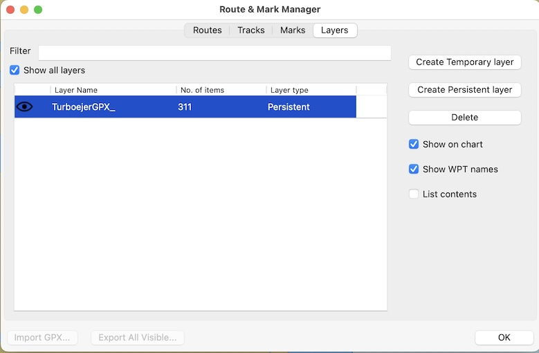
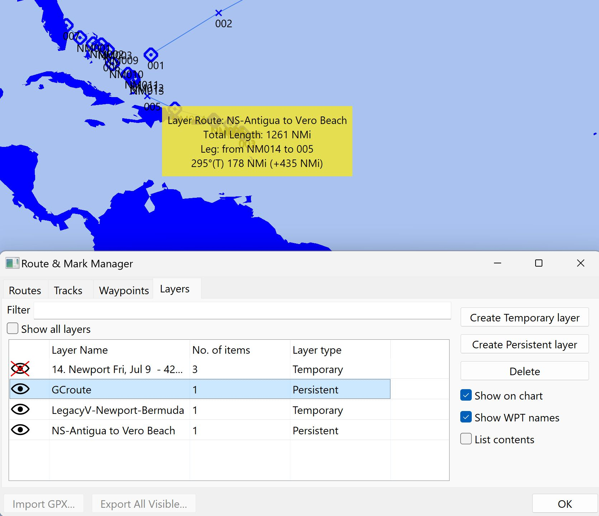

Layers Tab
Use Layers for
information on using layers
Layers
Properties for viewing the properties of the elements in a layer.

Create a Temporary Layer
Imports a GPX file as a temporary layer that exists only for the current OpenCPN session.
Create a Persistent Layer
Imports a GPX file as a persistent layer that will be loaded each time OpenCPN starts.
Delete
Select the layer you wish to delete, then select Delete. A dialog box will appear to confirm your action.
Show on Chart
Displays the layer on the chart. You may need to search the charts to find the layer. Tip: Enable Show on Chart and List Contents, then switch to the Routes Tab, select the layer from the list of routes, and select Center View.
List Contents
When enabled the layer is listed Routes & Marks > Routes Tab where functions Activate and Center View are available. If other functions are needed, import the GPX file as a route.
Learn Use of Layers with three sample GPX files
Download and unzip these files to extract the GPX files for practice
using Layers.
A great circle route in the Atlantic east of the Bahamas.
A route from Antigua to Florida.
A track from Newport, RI to Bermuda (displays a yellow track).
Zoom out to 1:20.0M will make these layers easier to see off the eastern
US coast.
Import the GPX Files as Layers
GCroute.gpx and NS-Antigua to Vero Beach.gpx are imported as permanent layers, with mouse hovered over the NS-Antigua to Vero Beach route to show the route information in yellow.

Right Click Selections
Right-click when the yellow layer information display is active will open an action popup menu. If you right-click a waypoint, only the Properties menu item appears while right-click on a track or route will display both Properties and Activate menu items.